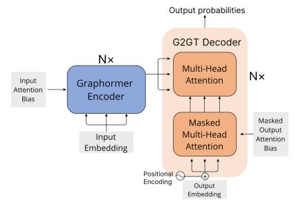
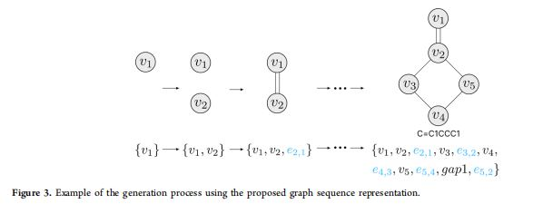
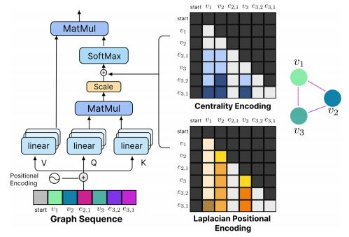
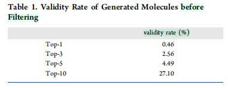
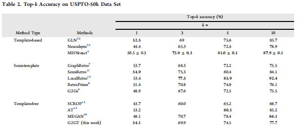
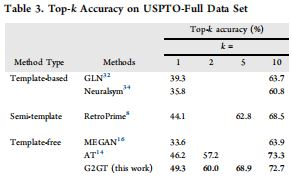
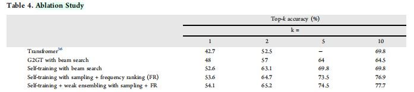
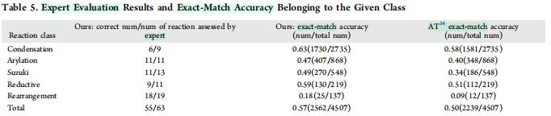

G2GT
论文标题：G2GT - Retrosynthesis Prediction with Graph-to-Graph Attention Neural Network and Self-Training
发表期刊：JCIM 2022
Abstract
- 逆合成预测，即识别可以用于合成目标分子的反应物分子，是有机化学机器相关领域的一个基础性挑战。
- 为了解决这一挑战，本文提出一种新颖的图到图(
graph-to-graph)变换模型G2GT。- 模型使用标准
transformer架构，运用图编码器和解码器。 - 本文展示了自训练（一种使用无标签数据增广手段）在改善模型性能上的有效性。
- 为了进一步提高多样性，本文提出一种弱集成(
weak ensemble)方法。- 该方法受到了反应类型标签和集成学习的启发。
- 结合集束搜索(
beam search)、核采样(nucleus sampling)和top-k采样方法，以提高推理结果的多样性。 - 使用简单的排序算法，以追踪最终的
top-10结果。
- 模型使用标准
- 本文在
USPTO-50K、USPTO-Full两个数据集上均获得了新的SOTA结果。USPTO-50K：top-1精确度为\(54\%\)。USPTO-Full：top-1精确度为\(49.3\%\)，top-10结果具有竞争力。
G2GT模型可以泛化到其他所有图到图变换任务。- 数据、代码：链接
Introduction
- 逆合成预测是有机化学及其相关学科的一个关键挑战。
- 该任务涉及合理地识别出一个用于合成产物分子的反应物集合。
- 近年，多种多样的逆合成计算工具(
computational synthesis tools)被用于促进新型分子逆合成路线的设计。 - 方法分类
- 基于模板(
template-based)的方法 - 无模板(
template-free)方法 - 半模板(
semi-template)方法
- 基于模板(
- 基于模板的方法
- 是一种基于规则的方法。
- 目标分子被应用于所有已知的反应模板。
- 反应模板：即图转换规则。
- 若产物分子的子图与模板的产物图相匹配，则称模板适用于产物分子，模板可能被转化到反应物集合中。
- 该方法依赖于专家知识，无法同数量不断增加的化学反应与时俱进。
- 其余方法使用机器学习手段，从反应数据集自动提取反应模板。
- 该方法需要原子映射信息（一种从反应物原子映射到产物原子的方案），原子映射是至今尚未解决的问题。
- 依赖于反应物模板库、专家规则，以实现其功能。
- 半模板(
semi-template)方法- 将逆合成过程分解为两个子任务
- （1）预测产物的反应中心
- （2）基于反应中心，将产物分解为合成子(
synthon)，然后将合成子(synthon)转化为一个完整的分子。
- 方法的局限性
- 依赖于高质量的原子映射反应数据集(
atom mapping reaction dataset)，以提取反应中心。 - 训练集受限于小的反应子集(
small subsets of reactions)，无法扩展到真实世界应用。
- 依赖于高质量的原子映射反应数据集(
- 将逆合成过程分解为两个子任务
- 无模板方法
- 将单步逆合成预测任务，转化为序列到序列(
Seq2Seq)翻译任务。- 反应物的
SMILES是“源语言”，产物的SMILES是“目标语言”。
- 反应物的
- 无模板方法可以使用所有的已知反应数据，并生成尚未发现的反应模式。
- 发展
Liu et al.首先采用无模板框架，通过长短时记忆(LSTM)网络，获得了与无模板方法相当的性能。- 增强
transformer(AT, Augmented Transformer)使用transformer和SMILES数据增强手段，在USPTO-50k和USPTO-Full数据集均取得了SOTA结果。 AT对其他方法形成挑战，原因是原子映射信息的缺失。
- 将单步逆合成预测任务，转化为序列到序列(
- 本文工作
- 受无模板方法的成功、近期图神经网络的发展及其在分子图表示学习(
molecular graph representation learning)的SOTA结果的启发，本文将逆合成任务视为一个图到图问题，并提出图到图transformer(G2GT, Graph2Graph Transformer)模型。 G2GT模型的组成Graphormer，由Ying et al.提出。- 图特征编码器
- 一种新型的图解码器
- 使用图表示的原因
- 将分子表示为图，是一种自然的表示方法，其中原子作为节点，化学键作为边，从而易于使用
GNN模型。 - 与
SMILES不同，图模型不受原子顺序的影响。
- 将分子表示为图，是一种自然的表示方法，其中原子作为节点，化学键作为边，从而易于使用
- 受无模板方法的成功、近期图神经网络的发展及其在分子图表示学习(
- 本文贡献总结
- 对于单步逆合成任务，提出新型的图到图模型。
- 模型继承了无模板方法的好处。
- 模型将序列表示替换为图表示。
- 编码器和解码器基于标准
transformer架构进行构建，以获得全局感受野、并行计算的能力。
- 提出使用自学习(
self-training)作为一种数据增强手段，结合采样、集束搜索和频率排序，以追踪top-10结果；提出了一种新型的弱集成方法，以增加结果的多样性。- 本文通过消融实验，证明了上述技巧大幅度提升了模型的性能。
- 在
USPTO-50k和USPTO-Full数据集上均取得新的SOTA结果，并在Reaxys数据集上证明了模型的健壮性和泛化能力。
- 对于单步逆合成任务，提出新型的图到图模型。
The G2GT Framework
Preliminaries（正文）Transformer架构- 由论文
Attention is All You Need提出。 - 一种神经网络架构，最初用于
NLP任务，如机器翻译、语言建模等。 - 主要用于语言翻译、文本总结和情感分析等
NLP任务。 - 基于自注意力机制，允许模型选择性地关注输入的某些部分。
- 自注意力机制同时运用于编码器、解码器。
- 编码器中，注意力机制用于计算输入数据的表示，这种表示考虑了整个输入序列。
- 解码器中，注意力机制用于计算输出数据的表示，同时考虑输入序列，以及之前已经生成的输出结果。
- 由论文
Graphormer架构- 基于标准的
Transformer架构，针对图表示学习任务进行了特定的调整。- 传统
Transformer架构中，输入数据被转化为词元(token)序列，从而可被模型处理。 - 图没有自然顺序(
natural order)，使用传统的Transformer模型进行图表示学习是困难的。
- 传统
- 作者将
Transformer运用于图表示学习的的关键思想- 高效编码图中的结构信息。
- 提出了几种简单、高效的结构编码方法，以帮助
Graphormer更好地表示图结构数据。 - 上述方法使得
Graphormer可以高效捕捉途中的结构信息。
- 基于标准的
Preliminaries（附录）Transformer- 自注意力模块
- \(Z = [z_1^T, \cdots, z_n^T]^T \in \mathbb{R}^{n \times d}\)，表示自注意力模块的输入。
- \(z_i\)：位置\(i\)的隐藏表示。
- \(d\)：隐藏维度数目。
- 通过对\(Z\)进行线性投影，可获得三种学习到的表示：查询(
query)、键(key)、值(value)。 - 注意力函数：\(Attention(Q, K, V) = softmax(\frac{QK^T}{\sqrt{d_k}})V\)
- \(Q\)和\(K\)的点积可以捕捉其相似度，对重要的关系进行表示。
- 自注意力模块
Graphormer- 学习图表示的三种编码
- 空间编码
- 边编码
- 中心性编码
- 空间编码
- 图中节点并非按序排列，而是可以存在于一个高维空间，由边进行连接。
- 若两结点\(v_i, v_j\)相连，
Graphormer，将两结点间的最短距离记为\(\phi(v_i, v_j)\)。 - \(A_{(i, j)}\)表示查询-键乘积矩阵(
query key product matrix)\(A\)的第\((i, j)\)个元素。 - 可学习标量\(b_{\phi(v_i, v_j)}\)的获得：\(A_{ij} = \frac{(z_iW_q)(z_jW_k)^T}{\sqrt{d}} + b_{\phi(v_i, v_j)} + c_{i, j}\)
- \(c_{i, j}\)为偏置项。
- 若两结点\(v_i, v_j\)相连，
- 图中节点并非按序排列，而是可以存在于一个高维空间，由边进行连接。
- 边编码
- 对于每一个结点对\((v_i, v_j)\)：
- 识别\(v_i\)到\(v_j\)的最短路径\(SP_{ij} = (e_1, e_2, \cdots, e_n)\)
- 计算边特征的点积的平均值
- 沿最短路径计算可学习的嵌入表示
- 对于每一个结点对\((v_i, v_j)\)：
- 中心性编码
- 使用度中心性(
degree centrality)作为Transformer网络的加性输入。 softmax注意力通过使用中心性编码，可以从查询和键中捕捉结点重要性的信号。- \(z_i^{(0)} = x_i + d_{deg(v_i)}\)，其中\(d\)表示图中结点的度数，反应了分子中原子的连通性。
- 使用度中心性(
- 结果：
Graphormer通过注意力机制，既能捕捉语义关联，又能捕捉结点的重要性信息。
- 学习图表示的三种编码
- 模型细节——
Top-K采样- 给定大小为\(V\)的离散词典，以及词典\(V\)上的概率分布\(P\)，在生成过程的每个时间步，模型计算出
top-k的概率，其中\(k\)为超参数。 - 上述概率用向量\(P_{topk}\)表示，
top-k词汇以外的其余词汇对应概率均为\(0\)。 top-k采样- 对于词典\(V\)上给定的概率分布\(P\)，
top-k采样定义为\(P_{topk} = topk(P, k)\)，其中\(topl(P, k)\)操作符从概率分布\(P\)中选出前\(k\)个元素，返回一个跟\(P\)形状相同，只有\(k\)个非零元的向量。
- 对于词典\(V\)上给定的概率分布\(P\)，
- 给定大小为\(V\)的离散词典，以及词典\(V\)上的概率分布\(P\)，在生成过程的每个时间步，模型计算出
G2GT模型架构
- 概述
- 编码器
- 采用
Graphormer，将输入图\(G = (V, E)\)（\(V = \{v_1, \cdots, v_n\}, n = |V|\)）编码为高维表示\(z = (z_1, \cdots, z_n)\)。
- 采用
- 解码器
- 逐元素生成输出图序列\((y_1, \cdots, y_m)\)。
- 对于每个新的生成步骤，模型根据最新的生成图状态，计算中心性和空间信息。
- 模型根据当前生成图的状态，计算下一个输出元素。
- 编码器
Graphormer编码器- 通过三种简单但高效的方法，将图结构信息注入模型。
- 第一个带有全局感受野的
GNN模型，性能超过消息传递神经网络、图卷积神经网络(GCN)。
- 解码器
- 简介
- 使用了
G2GT解码器的几个重要设计 - 新型的图序列
- 归纳注意偏置(
inductive attention bias)，与掩膜注意模块(masked attention module)相匹配。
- 使用了
- 图表示
- 给定输入分子的表示向量\(z\)，解码器按照自回归方式推理输出图序列(
output graph sequence)。 - 输出图序列
- 分子由无向图\(G = (V, E)\)进行表示。
- 给定一个固定的原子序列\(\pi\)，图\(G\)可由带权邻接矩阵(
weighted adjacency matrix)\(A \in \mathbb{R}^{n \times n}\)进行唯一确定。 - 边权根据化学键类型进行确定。
- \(e_{(i, i + 1)} = 1\)，表示顶点\(i, i + 1\)间存在单键。
- \(e_{(i, i + 1)} = 2\)，表示顶点\(i, i + 1\)间存在双键。
- 通过将带权邻接矩阵\(A\)分解为行，可获得图序列\(Y = \{v_1, v_2, e_{2, 2 - 1}, \cdots, v_n, e_{n, n - 1}, \cdots, e_{n, 1}\}\)。
- 为压缩序列长度，将尾部的空边进行省略，将非尾部的空边简记为\(gapN\)。
- 给定输入分子的表示向量\(z\)，解码器按照自回归方式推理输出图序列(
- 简介
- 损失函数
- 每个生成步骤都是一个分类问题，模型对图序列中的词元进行预测。
- 总类别数：原子个数\(\times\)手性类型数\(+\)化学键个数
- 将真实输出和预测输出进行比较，计算损失。
- 解码器中的中心性编码
- 直接加到编码器输出的问题
- 信息泄露，即生成当前输出时，预知未来输出信息。
- 随着新结点的连接，一个结点的中心性可能增加。
- 做法：将中心性信息作为注意力偏置(
attention bias)注入模型。- 对任意图\(G\)，预先计算中心性矩阵\(E \in \mathbb{R}^{y \times y \times d}\)。
- \(y\)：图序列长度、总的生成步骤数目。
- \(d\)：多端注意力的端头(
head)数目。 - 将非结点词元的中心性定义为\(0\)。
- 矩阵\(E\)的第\((i, j)\)个元素为\(d\)维向量，记作\(e_{i, j}\)。
- \(g_i^{j}\)：表示第\(j\)时间步，图序列的第\(i\)个元素。
- \(b\)：可学习的嵌入表示，由生成词元\(g_{i}^{j}\)进行索引。
- \(deg(g_i^j)\)：生成词元的度数。
- 若\(g_i^j\)是结点：\(e_{i, j} = b_{deg(g_i^j)}\)
- 若\(g_i^j\)不是结点：\(e_{i, j} = 0\)
- 对任意图\(G\)，预先计算中心性矩阵\(E \in \mathbb{R}^{y \times y \times d}\)。
- 设\(A_{i, j}\)是查询-键乘积矩阵\(A\)的第\((i, j)\)元素，则将中心性信息作为注意力偏置的自注意力公式为：
\(A_{i, j} = \frac{(z_iW_q)(z_jW_k)^T}{\sqrt{d}} = e_{i, j}\)
- 直接加到编码器输出的问题
- 拉普拉斯位置编码
- 思想与作用
- 传统方法将图表示为序列。
- 仅序列本身无法完全捕捉图中的结构信息。
- 使用拉普拉斯特征函数，进行位置编码。
- 注入模型的方式
- 与中心性编码相似，将拉普拉斯位置编码作为注意力偏置以注入模型。
- 通过合并(
concatenate)\(m\)个最小的特征值及其特征向量，构建规模为\(2 \times m\)的嵌入表示矩阵。 - 超参数\(m\)表示特征向量的数量上限。若\(m\)大于图中结点数，则使用掩膜填充。
- 对于上述嵌入表示矩阵，使用一个线性层，获取规模为\(k\)的新的嵌入表示，其中\(k = d\)，为多头注意力中“头”(
head)的数量。 - 最终，通过加性聚合方法，序列被转化为\(k\)维的结点嵌入表示。
- 公式
- \(L \in \mathbb{R}^{n \times n \times d}\)表示拉普拉斯编码矩阵，\(l_{i, j}\)为矩阵\(L\)的第\((i, j)\)个元素，\(lpe\)表示基于结点的(
node-wise)拉普拉斯位置编码。 - 若\(g_i^j\)是结点，则\(l_{i,j} = lpe_{g_i^j}\)。
- 若\(g_i^j\)不是结点，则\(l_{i,j} = 0\)。
- 修改后的自注意力公式（同时将拉普拉斯位置编码、中心性编码作为注意力偏置）：
\(A_{i, j} = \frac{(z_iW_q)(z_jW_k)^T}{\sqrt{d}} = e_{i, j} + l_{i, j}\)
- \(L \in \mathbb{R}^{n \times n \times d}\)表示拉普拉斯编码矩阵，\(l_{i, j}\)为矩阵\(L\)的第\((i, j)\)个元素，\(lpe\)表示基于结点的(
- 方法的好处
- 解决了之前的图表示方法的限制。
- 通过特征向量正则化，与特征值大小相匹配。
- 将特征向量的数目作为变量。
- 为了提高符号模糊不变性(
sign ambiguity invariance)，模型在训练过程中，随机翻转预计算的特征向量的符号。 - 按照不同频率使用正弦、余弦编码，作为位置编码。
- 解决了之前的图表示方法的限制。
- 思想与作用
- 概述
Data Augmentation and Decoding Strategy
- 自训练
- 由于模型的图排列不变性(
graph permutation invariance)，无法使用SMILES数据增强方法。 - 作为替代，模型使用自训练方法（类似于
AlphaFold），以增强模型的泛化能力。- 首先使用训练集训练一个模型。
- 然后，使用该模型预测外部分子集合(
external molecule set)上的化学反应。 - 选择高置信度的化学反应，加入训练集，再次训练模型。
- 由于模型的图排列不变性(
- 结果的多样性
- 简述
- 在逆合成预测中，结果多样性是一个重要的考量。
- 一个产物可能经由不同的反应，由不同的反应物集合进行合成。
- 反应物离去基团(
reactant leaving groups)也是逆合成多样性的一种体现。 - 作者结合下列手段，提高预测的多样性。
- 集束搜索、
Top-p和Top-k采样- 在推理过程中，使用
top-p采样（核采样）和top-k采样，作为解码方法。 top-p采样top-p采样从最小可获取集合(smallest accessible set)中选择词元，该集合的累积概率高于概率\(p\)。- 词元集合的规模可能随着下一词元概率分布的变化而发生动态变化。
- 给定分布\(P(x|x_{1:i - 1})\)，定义
top-p词元集合\(V(P)\subset V\)作为最小词元集合，该集合满足： \(\sum_{x \in V(P)} P(x|x_{x_{1:x - 1}}) \geq p\)
top-k采样- 在生成过程的每一个时间步，仅考虑
top-k最可能的词元，而非所有可能的词元。 - 大幅度减少模型需要探索的可能，提高了采样过程的效率。
- 在生成过程的每一个时间步，仅考虑
- 使用温度调整概率，用高温使得分布更为平滑，以提高结果的多样性。
- 频率排序
- 为了输出
top-n的结果，可以采样\(m\)次，其中\(m \geq n\)。 - 获得\(m\)个样本后，使用词元出现的频率作为排序索引，以追踪
top-n的结果。 - 想法：预测反应物的出现频率，反应了在模型中的置信度。
- 计算出现频率时，将集束搜索的解码结果视为补充样本。
- 为了输出
- 在推理过程中，使用
- 弱集成(
Weak Ensemble)- 目的：进一步提升预测反应物的多样性。
- 工作：探索训练集的反应物类别分布对于预测反应物的影响。
- 针对的问题：一个产物分子可能有不同的合理反应物，但由于训练集中不同反应类别的特定分布，模型可能倾向于预测特定的反应类别。
- 受集成学习启发的新型方法
- 随机分割训练集为\(n\)个集合，为分子图添加特殊节点，存储产物分子输入的标签序号(
tag ID)信息。 - 联合训练所有集合，作用是将模型暴露于不同的反应类别分布，减少对特定反应类别的偏向性(
bias)。 - 在推理阶段，将不同的
tag ID赋予一个产物分子，从同一产物不同tag ID形成的变种进行的变种。 - 上述方法的作用：对于同一产物分子，模型可以生成不同的、合理的反应物，以提高预测结果的多样性。
- 随机分割训练集为\(n\)个集合，为分子图添加特殊节点，存储产物分子输入的标签序号(
- 作用：本文消融实验证明，弱集成方法能提高
top-10精确度。
- 简述
Experimental Evaluation
- 实验设定
G2GT模型- \(L = 8 \times 2\)
- \(d = 768\)
- 注意力“头”的数目、注意力偏置的维度数目：\(24\)
- 特征向量的最大数目：\(30\)（由于
GPU内存限制） AdamW优化器- \(\epsilon = 1 \times 10^{-8}\)
- \(\beta_1 = 0.9, \beta_2 = 0.999\)
- 峰值学习率为\(2.5 \times 10^{-4}\)，最终学习率为\(1 \times 10^{-6}\)，使用平方衰减学习率调度器。
- 总训练步骤
USPTO-50k：总共训练\(120k\)个step。USPTO-Full：总共训练\(120k\)个step。
batch size设置- 设置为
10（受GPU内存限制） - 使用梯度累加方法，逐步提升
batch size。
- 设置为
top-p与top-k采样的参数- \(k = 5, p = 0.75\)
- 温度(
temprature)：\(6.5\) - 每个分子的采样次数：\(400\)
- 弱集成方法
USPTO-50k：共\(20\)个标签(tag)USPTO-Full：共\(50\)个标签(tag)- 按直觉选择上述标签数，原因是
USPTO-50k的所有化学反应可被分为\(10\)种反应类型。
- 训练
GPU：NVIDIA V100 32GBSMILES：在推理过程中，过滤无效的SMILES，不计入top-k准确率。- 训练时长
USPTO-50k：约\(20\)小时USPTO-Full：约\(3\)天
- 下图为过滤前的有效率(
validity rate)

- 数据和软件
- 数据集
USPTO-50k和USPTO-Full：用于与以往的工作进行比较。- 从
Reaxys数据库中提取的数据集（不公开）：与以往一个端到端的Transformer模型进行比较。
- 数据和代码
USPTO-50k：按照\(40k, 5k, 5k\)进行训练集、验证集、测试集分类。USPTO-Full- 原始版本
- 多产物的化学反应被分解为多个单产物的化学反应
- 去除了重复的化学反应，以及映射不正确的化学反应。
- 进一步过滤的版本（本文采用）
- 消除不正确反映，如无产物，或者仅由单离子作为反应物的反应。
- 将训练、测试、验证集平均减少了\(4%\)，规模为
769/96/96k。
- 原始版本
Reaxys：从Reaxys数据库中，随机采样\(5k\)个干净的化学反应。
- 数据集
Baseline和评价标准Baseline- 按照基于模板、半模板和无模板进行分类。
- 所有实验结果使用与原论文相同的参数设置而获得。
- 评价标准
- 预测正确，当且仅当化学反应的所有反应物都得到正确的预测。
- 使用流行的
top-k精确度。 - 使用
RDKit生成的标准SMILES，以与ground truth进行比较。
- 主要实验结果
 - 本文在
USPTO-Full数据集上取得了更为明显的改进，表明面临规模更大、噪声更多的数据，G2GT概括(generalize)底层数据的能力更好。 - 尽管使用了不同的方法，本实验与许多以往的研究都在
USPTO-50k上取得约\(53\%\)的top-1精确度。- 因此作者认为，
USPTO-50k不再是逆合成问题的一个好的benchmark，原因是它并不能充分反映该领域的最新研究进展。 - 作者建议更多地关注
USPTO-Full数据集。
- 因此作者认为，
- 随着
top-k增加，G2GT的优势逐渐消失。 - 若无数据增强和解码手段，则多样性问题会比较突出。
- 本文在
- 在
USPTO-50k数据集上进行的消融实验
- 本文提出许多用于提升模型性能的技巧，消融实验用于检验这些技巧对模型性能的影响。
- 结果表明自训练、频率排序和弱集成使
top-1精度提升了\(6\%\)，使top-10精度提升了\(13.2\%\)。 - 自训练
- 自训练作为一种数据增强手段，有助于模型泛化到不同的
scaffold，因此在小型数据集（如USPTO-50k）上训练时，是有益的。 - 自训练在
USPTO-Full数据集上的性能改善相当小，原因是该数据集包含足够多的分子，以帮助模型进行泛化。
- 自训练作为一种数据增强手段，有助于模型泛化到不同的
- 采样和频率排序
- 在推理阶段，作者使用采样、频率排序手段以增强结果的多样性。
- 与集束搜索不同，采样会产生一个具有多样性，但质量相对低一些的预测集合。
- 为了成功地追踪
top-k互不相同的预测，作者使用频率排序。 - 该方法使
top-1精度提升了\(1\%\)，使top-10精度提升了\(7\%\)。
- 弱集成
- 一致地提高了
top-k精确度。 - 结合了
NLP领域的prompting概念，即模型接受提示\(x\)的输入，根据概率分布\(P(y|x)\)输出\(y\)，结合模型集成(with the model ensemble)，以训练集的分布偏置(distribution bias)。
- 一致地提高了
- 模型泛化能力的检验
- 上述两实验中，信息泄露不可避免，原因是训练集、测试集都有相同的来源——
USPTO。 - 因此，作者从
Reaxys选择了5种常见反应类型、4507个反映，以进一步评估本文方法的泛化能力和健壮性。 - 有机合成专家分析了\(63\)个随机选择的结果，调研模型性能。
 - 发现
- 尽管对于某些反映类型（如：重排反应），精确匹配(
exact match)精度较低，但专家评估证明大多数预测的反应物是有效的。 - 原因分析：作者认为，各反映类型在训练集中的占比导致了这一现象。
- 由于训练集中重排反应稀少，故模型对于此类产物，倾向于预测出一个非重排反应类型。
- 精确匹配精度(
exact match accuracy)无法完全反应实际的预测有效性，但它能在一定程度上反映训练集的反应类型分布。
- 尽管对于某些反映类型（如：重排反应），精确匹配(
- 上述两实验中，信息泄露不可避免，原因是训练集、测试集都有相同的来源——
Conclusion and Limitation
- 总结
- 本文基于
Transformer模型，首次实现了一个支持并行预测所有时间步的图解码器结构，并成功将其应用于单步逆合成问题。 - 此外，将自训练引入反应预测，以增加训练样本的数目。
- 作者提出了各种各样的技巧，以进一步提高多样性，并证明了无模板、基于图的方法的优越性，以及它们在真实世界的适用性。
G2GT框架取得的SOTA结果- 在
USPTO-50k数据集上，取得了\(54.1\%\)的top-1精度。 - 将
USPTO-Full的top-1精度提高了\(3\%\)，提高至\(49.3%\)，同时保持了一个具有竞争力的top-10精度。 - 在
USPTO-Full数据集上的改进尤其有意义，原因是数据集规模更大，更具挑战性，更接近真实世界数据。- 该数据集没有可靠的原子映射信息，没有先验的反应类别信息，没有模板可以匹配数据集中所有反应。
- 此外，数据集中的反应仅依赖于模板是无法完全预测的。
- 因此，作者提出的方法可能在真实世界使用中表现更佳。
- 在
- 本文基于
- 局限性
- 尽管本文提出的方法在
top-1精度方面超越了以往的工作，作者认为该方法的top-10精度是不足的。 - 此外，
G2GT在大分子上的应用是受限的，原因是自注意力模块的平方时间复杂度，以及LPE（拉普拉斯位置编码）对内存的占用。 - 这一假说需要通过进一步研究得到证实。
- 尽管本文提出的方法在
Future Work
- 不论分子的其余部分如何，同一个官能团(
functional group)总是经历相同或相似的化学反应。 - 因此，有理由相信一个能够预测化学反应结果的模型也可以对官能团进行特征描述(
characterize)。 - 在化学反应以外，官能团本质上带有分子的物理和化学性质。
- 因此，逆合成预测可以视为分子表示的一个预训练任务，本实验获得了一些分子性质预测任务的初步(
preliminary)结果。